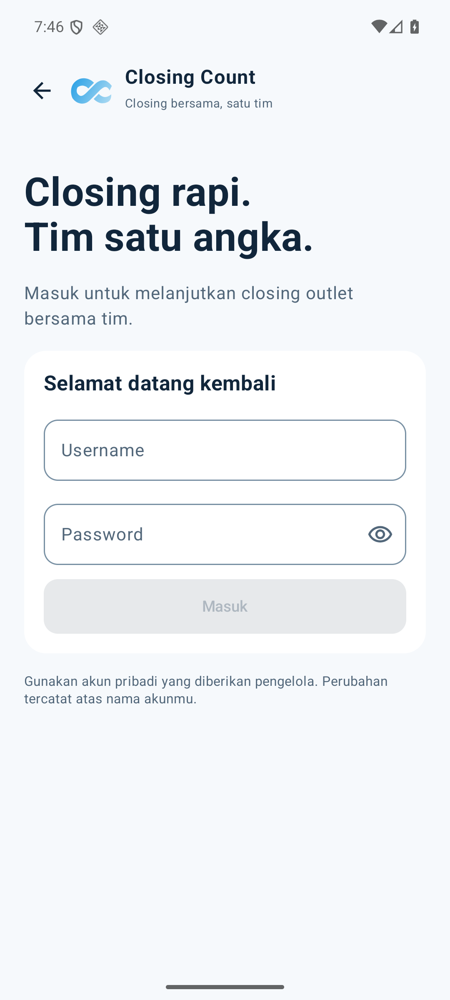
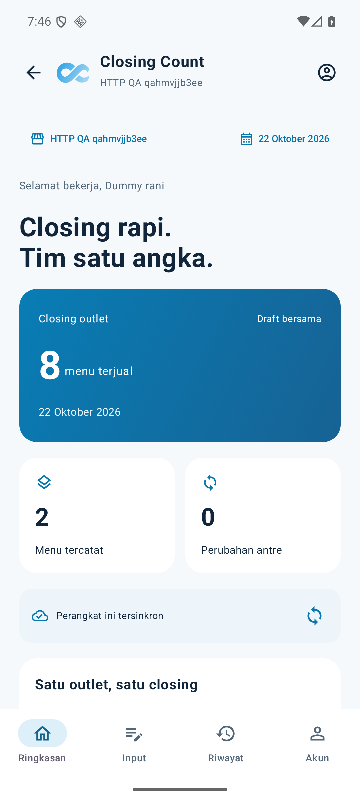
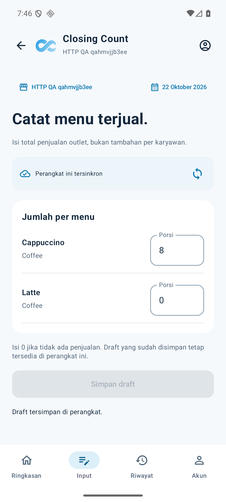
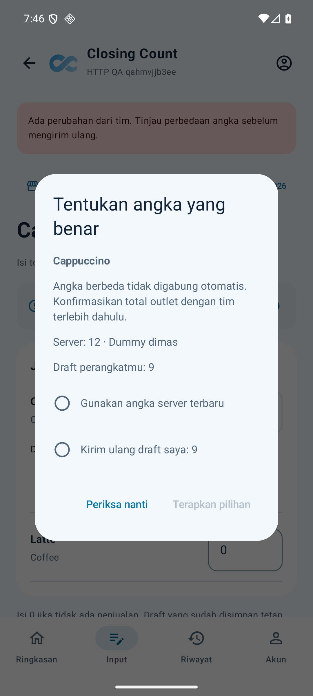

Closing rapi. Tim satu angka.
Screenshot aplikasi Android Compose dengan service dan database dummy nyata. Login, simpan dan konflik sudah diuji melalui layar; fitur supervisor, pengujian restart, dua instalasi dan UAT HP masih terbuka. Ini kandidat pengembangan, bukan demo publik. Catatan scope dan bukti.
01 · Login
02 · Ringkasan
03 · Input
04 · Konflik
05 · Sesudah pilihan